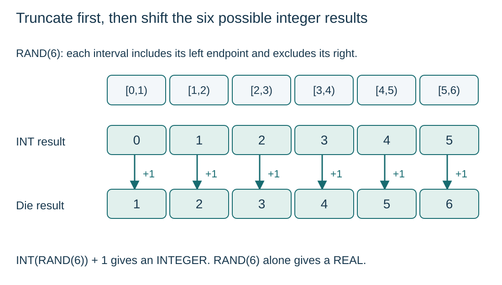

Use numeric built-in functions
S11.03.A01
Visual overview
Truncate first, then shift the six possible integer results

Visual transcript
- RAND(6) returns a real value x with 0 <= x < 6.
- INT maps the six intervals [0,1), [1,2), …, [5,6) to integers 0, 1, …, 5.
- Adding 1 produces die values 1 through 6. The endpoint 6 is excluded from RAND(6), but included in the final integer results.
Core explanation
Read the function contract
A built-in function is supplied by the language; a library routine offers reusable operations through an interface. Check argument order, accepted types and the returned value before using the call in an expression.
Produce one integer die result
- RAND(6): Returns a REAL from 0 inclusive to 6 exclusive.
- INT: Taking the integer part gives 0, 1, 2, 3, 4 or 5.
- Add 1: INT(RAND(6)) + 1 gives an INTEGER from 1 to 6 inclusive.